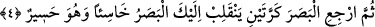

Bunlara göre âyet-i kerîmede bütün yaratıkların kesinlikle uygunsuz olmadıkları ifâde
edilirken böyle bir uygunsuzluğun görülüp görülemeyeceği sorulmaktadır. Çünkü gece
gündüzden başka bir şeydir ve bu mesele sâdece gece ile gündüz noktasında da
kalmayıp birbirine zıt ve ters olan her şeye uzanmaktadır. Bu soru sorulduktan sonra
Allah bizâtihi kendisi, yaratıklarında ihtiyaç duyulacak herhangi bir eksiklik ya da
ihtiyaç duyulmayacak luzumsuz herhangi bir fazlalık olmadığını ifâde ederek cevap
vermiştir. Allah’ın bu cevabına göre bütün yaratıklar doğru ve düzgün olup kendilerini
yaratanın âlim olduğunu göstermektedirler.
Bu âyet-i kerîme Allah Teâlâ’nın her şeyi kuşatan rahmânî rahmetinin şümûlüne işâret
etmektedir. Nitekim Cenab-ı Hakk’a hitâben: “Ey dünyanın Rahmânı ve âhiretin
Rahîmi” denmiştir. Çünkü bütün varlıkların tamamı ister ulvî, ister suflî, ister nurânî,
ister zulmânî, ister ruhânî, ister cismânî olsun Rahmân’ın nur ve rahmetinden yapı ve
rızıklarının aslında herhangi bir uygunsuzluk olmamak üzere yaratılmışlardır.
“Gözünü çevir (de bak)” yâni gözünü semâyı görmek üzere göğe çevir ki ayan beyân
bu gerçek sana belli olsun da kafanda herhangi bir kuşku kalmasın. Rece’a fiili hem
lâzım ve hem de müteaddi olarak kullanılır. Mânâsı “başlangıç noktasına dönmek”
demektir. Bu nokta ister mekânî, ister fiili, ister sözlü olsun farketmez. Yine bu dönüş
kişinin ister zâtıyla dönüşü olsun, isterse parçalarıyla olsun, ister onun fiillerinden
birisiyle olsun farketmez. Orada “hiçbir çatlak görecek misin” âyetin metninde yer alan
“futûr” Kamus’ta ifâde edildiği üzere “fıtır” kelimesinin çoğuludur. Fıtır, Tâcu’l-
masadır’da ifâde edildiği gibi “yarmak” anlamınadır. Buna göre âyetin mânâsı “gökte
herhangi bir yırtık olmadığı için bak bakalım orada herhangi bir yarık ve çatlak görecek
misin?” şeklindedir.
Kâşânî der ki, gökte herhangi bir çatlak olsaydı oradan meydana gelen bütün
menfaatler yok olur giderdi. Sözünü ettiğimiz bu menfaatler kendi tabakalarına dağılmış
veya bir kısmı ya da tamamı dağılmış olan yıldızların menfaatidir. Gökte bir yaratık
olarak herhangi bir çatlak görülemeyeceğine göre Yaratıcı’nın bizâtihi kendisinde
cismânî varlıkların özelliklerinden herhangi bir özellik haydi haydi olmayacaktır.
Yeryüzü bütün genişliği ile onun sofrasıdır.
Bu hân-ı yağmada dost da düşman da aynıdır.
4. Sonra gözünü, tekrar tekrar çevir bak; göz (aradığı bozukluğu bulmaktan)
âciz ve bitkin hâlde sana dönecektir.
“Sonra gözünü, tekrar çevir bak” ifâdesi şu mânâya gelir: “Gözünü bir kez daha
çevir; gökyüzünde herhangi bir kusur ya da bozukluk var mı yok mu diye gözünü tekrar